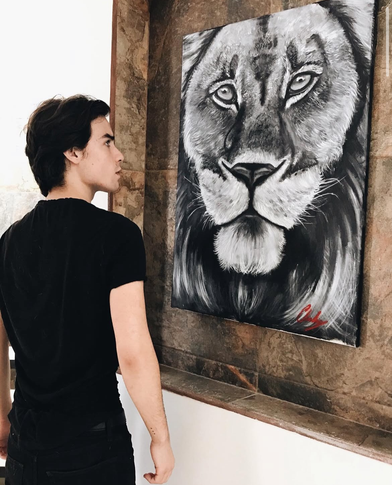
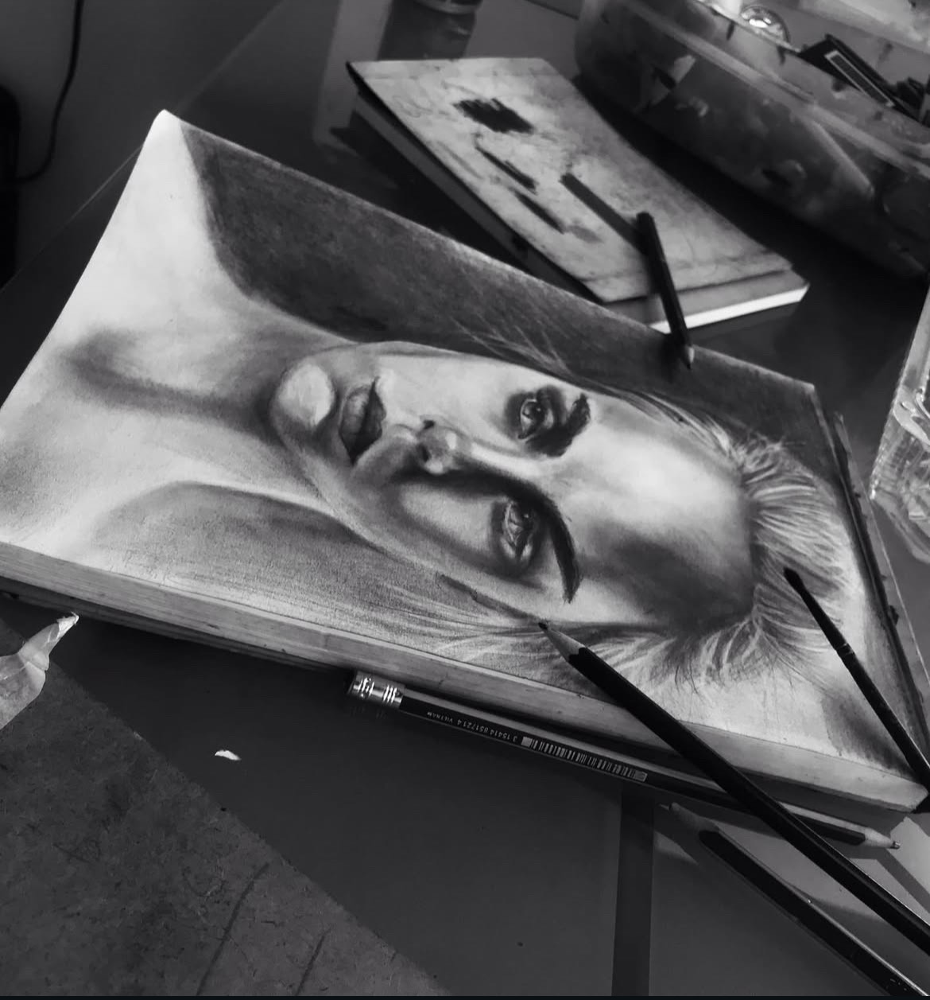

Hola, mi nombre es Carlos y actualmente estudio la licenciatura en Negocios. Este sitio web forma parte de un proyecto académico, pero también funciona como un espacio personal donde comparto un poco sobre quién soy y lo que me interesa.
Aunque mi formación está enfocada en el área de negocios, tengo un fuerte interés por las disciplinas creativas. Me llama especialmente la actuación, el cine y el proceso de contar historias, así como la pintura y otras formas de expresión artística. Considero que estas áreas complementan mi forma de pensar y me permiten desarrollar una visión más amplia y creativa.
A través de este sitio busco mostrar ese equilibrio entre lo académico y lo personal, explorando tanto mis intereses profesionales como mis hobbies y documentando mi proceso de aprendizaje en diferentes áreas.
Actualmente curso la licenciatura en Negocios, donde he desarrollado conocimientos relacionados con administración, marketing y análisis básico de procesos empresariales. Durante mis estudios he tenido acercamiento a temas como planeación, organización y toma de decisiones, los cuales me han permitido comprender cómo funcionan distintos tipos de proyectos y organizaciones.
De manera complementaria, me interesa seguir formándome en áreas creativas como la actuación y las artes visuales, ya que considero que estas disciplinas aportan una perspectiva distinta y enriquecen mi desarrollo personal y profesional.
A lo largo de mi formación en el área de negocios he desarrollado habilidades relacionadas con la organización, el análisis básico de información y el trabajo en equipo. Me interesa comprender los procesos detrás de los proyectos y encontrar formas prácticas de mejorar su planeación y ejecución.
En el ámbito creativo, he explorado habilidades vinculadas con la expresión artística, como la actuación y la pintura, las cuales me han ayudado a fortalecer mi creatividad, sensibilidad visual y capacidad de comunicación. Considero que combinar habilidades analíticas y creativas me permite abordar los retos desde distintas perspectivas.
Este sitio web tiene fines académicos y personales. Para cualquier comentario u observación relacionada con el contenido del proyecto, puedes escribir al siguiente correo:
c.perezvillanueva@ebc.edu.mx
© 2025 - Carlos Pérez Villanueva